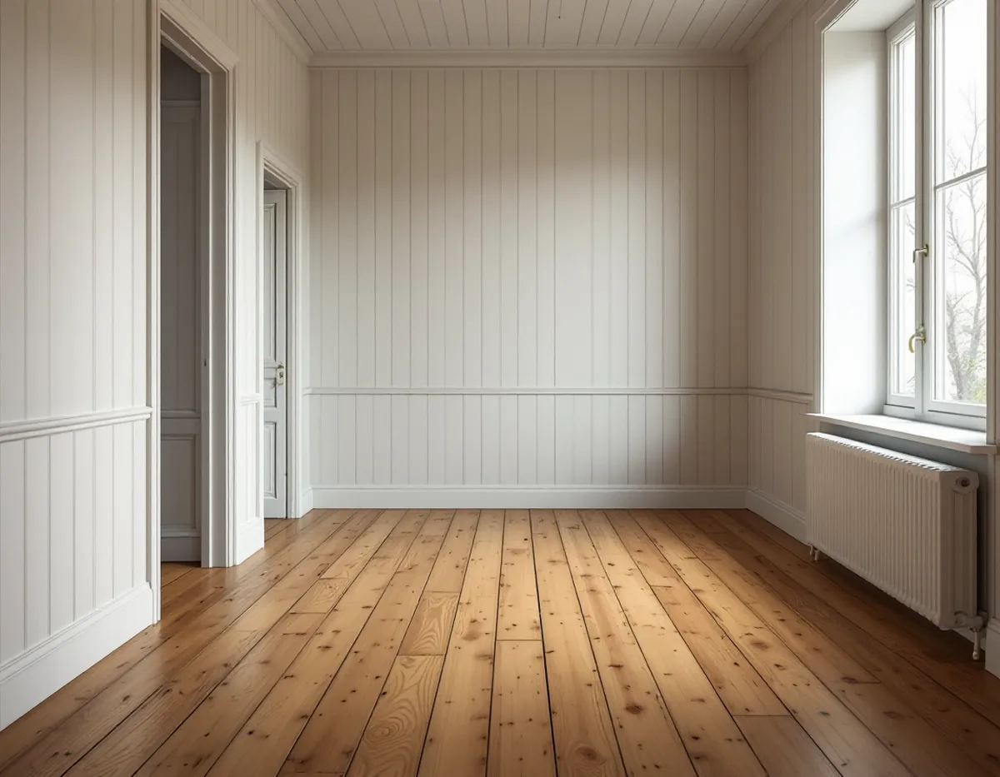
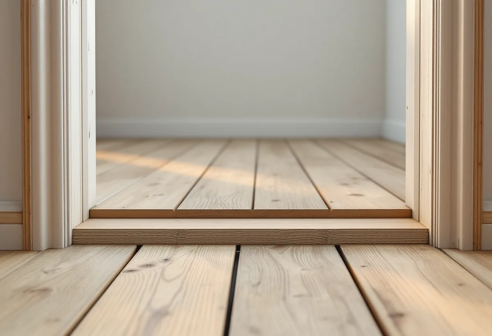
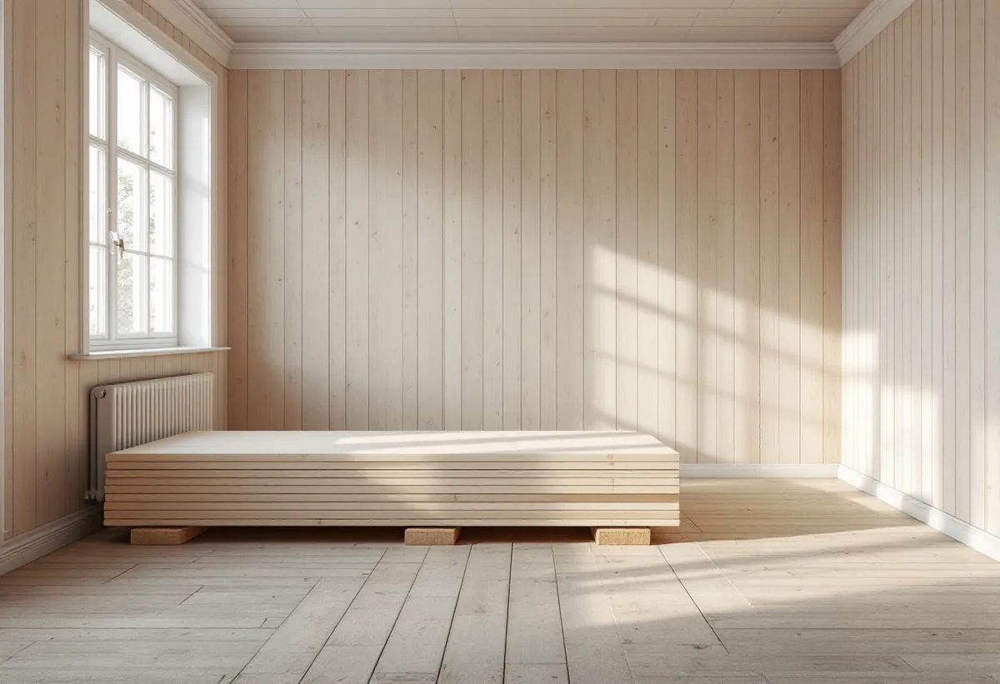

Besök
Gratis besök där vi tittar på det gamla golvet.
Villorna i Duvbo byggdes kring sekelskiftet 1900 och på 1920-talet, och i många finns de gamla trägolven kvar under mattor och senare golv. Ett massivt trägolv kan renoveras många gånger. När det inte går, eller när ett rum behöver ett nytt golv, lägger vi ett som passar husets ålder.

Husen i Duvbo är framför allt byggda vid sekelskiftet 1900 och under 1920-talet. Sekelskiftesvillorna byggdes ofta av ägarna själva, och 1920-talsvillorna är enklare och mer regelbundna. Riksantikvarieämbetet pekade 1987 ut Duvbo som riksintresse för kulturmiljövården.
Kommunens miljöprogram handlar om husens utsida, men samma tanke om varsamhet gäller inne: det som är gammalt och fungerar ska helst få vara kvar. Det gäller inte minst golven.

Golvbranschen beskriver massiva trägolv som golv där hela tjockleken är samma träslag. De kan renoveras i hög utsträckning, och det som sätter gränsen är tjockleken mellan ytan och not och spont. Så länge det finns tillräckligt med trä kvar kan golvet slipas igen.
Innan vi föreslår ett nytt golv tittar vi därför på det gamla. Vi lyfter en tröskel eller en list och mäter hur mycket trä som finns kvar ovanför sponten. Är det tillräckligt kan golvet slipas och behandlas i stället – läs mer om golvslipning i Sundbyberg.
Ibland är det gamla golvet för slitet, för skadat eller borta sedan länge. Då lägger vi nytt. I ett äldre hus väljer vi gärna massiva brädor eller ett golv med bredd och träslag som passar huset, spikat eller skruvat på reglar eller blindbotten.
I ett nyare tillbygge kan lamellparkett vara ett alternativ. Den består av flera korslimmade skikt och rör sig mindre med fukten. Vi går igenom för- och nackdelar innan du bestämmer dig.
Trä krymper och sväller med luftens fuktighet. Golvbranschen rekommenderar att rumstemperaturen hålls mellan cirka 15 och 25 grader och den relativa fuktigheten mellan 30 och 60 procent för att golvet inte ska röra sig för mycket. Våta rengöringsmetoder avråds.
I en gammal villa varierar klimatet mer än i ett nytt hus. Därför låter vi nytt virke vänja sig vid rummet innan det läggs, och vi lämnar råd om skötsel så att golvet håller sig fint.
Bor du i en bostadsrätt i Sundbyberg är golvet inne i lägenheten normalt ditt ansvar, men ett golvbyte som påverkar ljudet till grannen under kan kräva att du tar hänsyn till föreningens regler.
Vi går igenom vad föreningen har för krav innan vi beställer material, och väljer underlag och golv efter det. Läs mer om golvläggning.
I en gammal villa är golven sällan helt plana. Mellan rummen kan nivåerna skilja sig, och trösklarna är ofta höga. När ett golv byts eller renoveras tittar vi på hur övergångarna ska lösas, så att dörrarna går att stänga och ingen snubblar.
Gamla golvlister med profiler går ofta att ta ner och sätta tillbaka. Saknas några tillverkas nya i samma profil. Det gör att rummet ser ut som förut, trots att golvet är nytt eller nyslipat. Vi sparar och märker de gamla delarna innan arbetet börjar.

Gratis besök där vi tittar på det gamla golvet.
Vi mäter hur mycket trä som finns kvar ovanför sponten.
Slipa och behandla, laga eller lägga nytt – skriftligt kostnadsförslag.
Nytt virke får vänja sig vid rummet innan läggning.
Golvet läggs, spikas eller skruvas och listas.
Skötselråd för trägolv i ett äldre hus.
Äger du ett småhus ger arbetet rotavdrag när du bor i huset eller har det som fritidshus. Avdraget är 30 procent av arbetskostnaden, högst 50 000 kronor per person och år och högst 75 000 kronor tillsammans med rutavdrag, enligt Skatteverket. Material och resor ger inget avdrag. Geal drar avdraget direkt på fakturan.
Bor du i en bostadsrätt ger golvbyte inne i lägenheten rotavdrag för det som du ansvarar för enligt stadgarna.
Golvytan, om det gamla golvet kan renoveras, hur underlaget ser ut, vilket golv du väljer och hur mycket som ska lagas runt trösklar och lister. Du får ett skriftligt kostnadsförslag efter besöket.
Parkett, trägolv, klinker och slipning.
Golvläggning i Stockholm →Takbyte, takbesiktning och plåtarbeten.
Takläggare i Sundbyberg →Rött lertegel och synliga taktassar i Duvbo.
Takrenovering i Sundbyberg →Duvbo, potten och medgivandena.
Attefallshus i Sundbyberg →Ventilationen, OVK och Duvbo.
Badrumsrenovering i Sundbyberg →Nytt hus, träd och regler i Duvbo.
Byggföretag i Sundbyberg →Panel och puts på Duvbos villor.
Fasadrenovering i Sundbyberg →Duvbo, flerbostadshusen och lovet.
Fönsterbyte i Sundbyberg →Egnahemsvillornas fönster i Duvbo.
Fönsterrenovering i Sundbyberg →Ta bort färg och fernissa från gamla golv.
Golvslipning i Sundbyberg →Duvbos villor och stadens lägenhetskök.
Köksrenovering i Sundbyberg →Lamellhus, kulörbyte och bostadsrätt.
Målare i Sundbyberg →Duvbos tak, rännor och lov.
Plåtslagare i Sundbyberg →Altan, pergola och staket enligt stadens guide.
Snickare i Sundbyberg →Container, ställning och grannar.
Takbyte i Sundbyberg →Ny tapet i äldre lägenheter.
Tapetsering i Sundbyberg →Duvbo, träden och riktlinjerna.
Tillbyggnad i Sundbyberg →Duvbos villor, kaminer och etablering.
Totalrenovering i Sundbyberg →